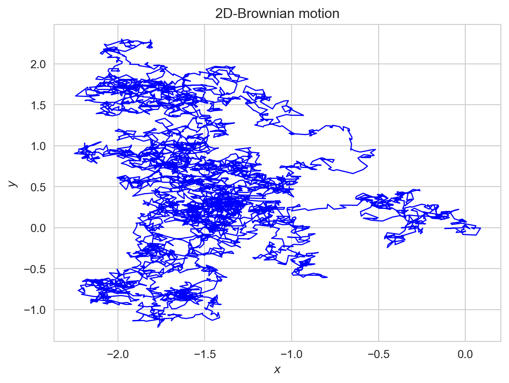

import numpy as np
import matplotlib.pyplot as plt
import seaborn as sns
sns.set_style("whitegrid")
class BrownianMotion2D:
"""
Generate sample paths for a 2d-brownian motion
"""
def __init__(
self,
endpoint : float = 1.0,
discretization : float = 0.01
):
self.endpoint = endpoint
self.discretization = discretization
def generate_paths(self, num_paths : int):
steps = int(self.endpoint/self.discretization)
delta_z = np.sqrt(self.discretization) * np.random.randn(num_paths,2,steps)
# paths has shape [num_paths,2,num_steps]
paths = np.cumsum(delta_z,axis=2)
# Brownian motion has position (0,0) at time t=0
# Append initial position
init_position = np.zeros((num_paths,2,1))
paths = np.append(init_position,paths,axis=2)
return pathsMultivariate Ito Calculus.
We can generalize the theory to functions of several brownian motions. This unleashes the full power of Ito calculus.
Multidimensional Brownian motion.
Definition 1 (Brownian motion in \(\mathbf{R}^{d}\).) Take \(d\in\mathbf{N}\). Let \(B^{(1)},\ldots,B^{(d)}\) be independent standard Brownian motions in \((\Omega,\mathcal{F},\mathbb{P})\). The process \((B_{t}:t\geq0)\) taking values in \(\mathbf{R}^{d}\) defined by :
\[\begin{aligned} B_{t} & =(B_{t}^{(1)},\ldots,B_{t}^{(d)}),\quad t\geq0 \end{aligned}\]is called a \(d-\)dimensional Brownian motion or a Brownian motion in \(\mathbf{R}^{d}\).
The Brownian filtration \((\mathcal{F}_{t}:t\geq0)\) is now composed of the information of all Brownian motions. In other words, it is given by the sigma-fields:
\[\begin{aligned} \mathcal{F}_{t} & =\sigma(B_{s}^{(i)},1\leq i\leq d,s\leq t) \end{aligned}\]For every outcome \(\omega\), the path of trajectory of a \(d-\)dimensional Brownian motion is a curve in space parametrized by the time \(t\):
\[\begin{aligned} t\mapsto B_{t}(\omega) & =(B_{t}^{(1)}(\omega),B_{t}^{(2)}(\omega),\ldots,B_{t}^{(d)}(\omega)) \end{aligned}\]Of course, this curve is continuous, since each coordinate is. The below numerical project gives an example of one path of a two-dimensional brownian motion. This is a very rugged and intertwined curve! We might wonder, what it does as \(t\to\infty\). Does it wander around \((0,0)\) ad infinitum or does it eventually escape to infinity? We will answer this question in a later section. For doing so, we shall need a version of Ito’s formula for multi-dimensional Brownian motion. We finish this section by noticing that it is also easy to construct Brownian motions in higher dimensions for which the coordinates are correlated.
2D Brownian Motion
Consider a two-dimensional Brownian motion \((B_{t}^{(1)},B_{2}^{(2)})\) starting at \((0,0)\).
Let’s plot one path of this Brownian motion on the plane \(\mathbf{R}^{2}\) on the plane in \(\mathbf{R}^{2}\) on the time interval \([0,5]\) using a discretization of \(0.001\).
We define BrownianMotion2D class.
We can then configure and use BrownianMotion2D objects as we please.
Show the code
bm = BrownianMotion2D(endpoint=5.0,discretization=0.001)
paths = bm.generate_paths(num_paths=1)
path = paths[0]
plt.xlabel(r'$x$')
plt.ylabel(r'$y$')
plt.title(r'2D-Brownian motion')
plt.grid(True)
plt.plot(path[0],path[1],linewidth=1,color='blue')
plt.show()
Ito’s Formula.
Theorem 1 (Ito’s Formula.) Let \((B_{t}:t\geq0)\) be a \(d-\)dimensional brownian motion. Consider \(f\in\mathcal{C}^{2}(\mathbf{R}^{d})\). Then, we have with probability one that for all \(t\geq0\):
\[\begin{aligned} f(B_{t})-f(B_{0}) & =\sum_{i=1}^{d}\int_{0}^{t}\partial_{x_{i}}f(B_{s})dB_{s}^{(i)}+\frac{1}{2}\int_{0}^{t}\sum_{i=1}^{d}\partial_{x_{i}}^{2}f(B_{s})ds\label{eq:multidimensional-ito-formula} \end{aligned}\]I stress that, as in the one-dimensional case, Ito’s formula is an equality of processes (and not an equality in distribution). Thus, the processes on both sides must agree for each path.
Interestingly, the mixed partials \(\partial_{x_{i}x_{j}}f(B_{s})\), \(i\neq j\) do not appear in the formula! We see from Ito’s formula that the process \(f(B_{t})\) can be represented as a sum of \(d+1\) processes: \(d\) Ito integrals and one Riemann integral (which is a process of finite variation). In vector notation, the formula takes the form:
\[\begin{aligned} f(B_{t})-f(B_{0}) & =\int_{0}^{t}\nabla f(B_{s})^{T}dB_{s}+\frac{1}{2}\int_{0}^{t}\nabla^{2}f(B_{s})ds \end{aligned}\]where it is understood that the first term is the sum of the \(d\) Ito integrals in the equation. The symbol \(\nabla^{2}\) is the Laplacian of \(f\):
\(\sum_{i=1}^{d}\frac{\partial^{2}}{\partial x_{i}^{2}}f(B_{s}^{(1)},\ldots,B_{s}^{(d)})ds\)
In differential form, Ito’s formula becomes very neat:
\[\begin{aligned} df(B_{t}) & =\sum_{i=1}^{d}\partial_{x_{i}}f(B_{s})dB_{t}^{(i)}+\frac{1}{2}\sum_{i=1}^{d}\partial_{x_{i}}^{2}f(B_{s})dt=\nabla f(B_{t})^{T}dB_{s}+\frac{1}{2}\nabla^{2}f(B_{t})dt \end{aligned}\]Example 2 Consider the functions (1) \(f(x_{1},x_{2})=x_{1}^{2}+x_{2}^{2}\) (2) \(f(x_{1},x_{2})=e^{x_{1}}\cos x_{2}\) and the processes \((X_{t}:t\geq0)\) and \((Y_{t}:t\geq0)\). If we apply Ito’s formula to the first process, we have:
\[\begin{aligned} X_{t} & =\int_{0}^{t}2B_{s}^{(1)}dB_{s}^{(1)}+\int_{0}^{t}2B_{s}^{(2)}dB_{s}^{(2)}+\frac{1}{2}\int_{0}^{t}(4dt)\\ & =\int_{0}^{t}2B_{s}^{(1)}dB_{s}^{(1)}+\int_{0}^{t}2B_{s}^{(2)}dB_{s}^{(2)}+2t \end{aligned}\]The second process gives:
\[\begin{aligned} Y_{t} & =\cos B_{s}^{(2)}\int_{0}^{t}e^{B_{s}^{(1)}}dB_{s}^{(1)}-e^{B_{s}^{(1)}}\int\sin B_{s}^{(2)}dB_{s}^{(2)}+\frac{1}{2}\int_{0}^{t}\left(e^{B_{s}^{(1)}}\cos B_{s}^{(2)}-e^{B_{s}^{(1)}}\cos B_{s}^{(2)}\right)dt\\ & =1+\cos B_{s}^{(2)}\int_{0}^{t}e^{B_{s}^{(1)}}dB_{s}^{(1)}-e^{B_{s}^{(1)}}\int\sin B_{s}^{(2)}dB_{s}^{(2)} \end{aligned}\]Example 3 (Cross-Variation of \(B_{t}^{(1)}\) and \(B_{t}^{(2)}\)). Let \((t_{j}:j\leq n)\) be a sequence of partitions of \([0,t]\) such that \(\max_{j}|t_{j+1}-t_{j}|\to0\) as \(n\to\infty\). Prove that:
\[\begin{aligned} \lim_{n\to\infty}\sum_{j=0}^{n-1}(B_{t_{j+1}}^{(1)}-B_{t_{j}}^{(1)})(B_{t_{j+1}}^{(2)}-B_{t_{j}}^{(2)}) & =0\quad\text{in } L^{2} \end{aligned}\]This justifies the rule \(dB_{t}^{(1)}\cdot dB_{t}^{(2)}=0\).
Hint: Just compute the second moment of the sum.
We have:
\[\begin{aligned} & \mathbf{E}\left[\left(\sum_{j=0}^{n-1}(B_{t_{j+1}}^{(1)}-B_{t_{j}}^{(1)})(B_{t_{j+1}}^{(2)}-B_{t_{j}}^{(2)})\right)^{2}\right]\\ = & \sum_{j=0}^{n-1}\mathbf{E}[(B_{t_{j+1}}^{(1)}-B_{t_{j}}^{(1)})^{2}(B_{t_{j+1}}^{(2)}-B_{t_{j}}^{(2)})^{2}]\\ + & 2\sum_{j<k}\mathbf{E}\left[(B_{t_{j+1}}^{(1)}-B_{t_{j}}^{(1)})(B_{t_{k+1}}^{(1)}-B_{t_{k}}^{(1)})(B_{t_{j+1}}^{(2)}-B_{t_{j}}^{(2)})(B_{t_{k+1}}^{(2)}-B_{t_{k}}^{(2)})\right] \end{aligned}\]Both these expectations are zero, since the brownian motions are independent and non-overlapping increments are independent.
Consequently, \(\sum_{j=0}^{n-1}(B_{t_{j+1}}^{(1)}-B_{t_{j}}^{(1)})(B_{t_{j+1}}^{(2)}-B_{t_{j}}^{(2)})\to0\) in the \(L^{2}\) sense.
Proof. The proof of the formula follows the usual recipe: Taylor’s theorem together with the quadratic variation and the cross-variation. In this case, we do get a cross-variation between the different Brownian motions. More precisely, consider a partition \((t_{j}:j\leq n)\) of \([0,t]\). Then we can write:
\[\begin{aligned} f(B_{t})-f(B_{0}) & =\sum_{j=0}^{n-1}(f(B_{t_{j+1}})-f(B_{t_{j}})) \end{aligned}\]We can apply the Taylor’s series expansion for each \(j\) to get:
\[\begin{aligned} f(B_{t})-f(B_{0}) & =\sum_{j=0}^{n-1}\nabla f(B_{t_{j}})(B_{t_{j+1}}-B_{t_{j}})\\ & +\frac{1}{2}\sum_{j=0}^{n-1}(B_{t_{j+1}}-B_{t_{j}})^{T}Hf(B_{t_{j}})(B_{t_{j+1}}-B_{t_{j}})+\mathcal{E} \end{aligned}\]where \(Hf\) is the Hessian matrix of \(f\). We wrote the expansion using the vector notation to be economical. Let’s keep in mind that each term is a sum over the derivatives. The first term will converge to \(d\) Ito integrals as in the one-dimensional case. Now, the summand in the second term is:
\[(B_{t_{j+1}}^{(1)}-B_{t_{j}}^{(1)},\ldots,B_{t_{j+1}}^{(d)}-B_{t_{j}}^{(d)})\left[\begin{array}{ccc} \partial_{x_{1}}^{2}f(B_{t_{j}}) & \ldots & \partial_{x_{1}x_{d}}^{2}f(B_{t_{j}})\\ \vdots & \ddots\\ \partial_{x_{d}x_{1}}^{2}f(B_{t_{j}}) & & \partial_{x_{d}}^{2}f(B_{t_{j}}) \end{array}\right]\left[\begin{array}{c} B_{t_{j+1}}^{(1)}-B_{t_{j}}^{(1)}\\ \vdots\\ B_{t_{j+1}}^{(d)}-B_{t_{j}}^{(d)} \end{array}\right]\]
So, \((B_{t_{j+1}}^{(i)}-B_{t_{j}}^{(i)})\) is pre-multiplied with the term \(\partial_{x_{i}x_{k}}^{2}f(B_{t_{j}})\) and it is post-multiplied \((B_{t_{j+1}}^{(k)}-B_{t_{j}}^{(k)})\). Consequently, the second term in the Taylor’s series expansion can be re-written as:
\[\sum_{j=0}^{n-1}\left(\sum_{i=1}^{d}\partial_{x_{i}}^{2}f(B_{t_{j}})(B_{t_{j+1}}^{(i)}-B_{t_{j}}^{(i)})^{2}+\sum_{1\leq i<k\leq d}\partial_{x_{i}x_{k}}^{2}f(B_{t_{j}})(B_{t_{j+1}}^{(i)}-B_{t_{j}}^{(i)})(B_{t_{j+1}}^{(k)}-B_{t_{j}}^{(k)})\right)\]
The second term on the right converges to \(0\) in the \(L^{2}\) sense when \(i\neq k\), from exercise. This explains why the mixed derivatives disappear in the multi-dimensional Ito’s formula. As for the case \(i=k\), it reduces to the quadratic variation as in the one-dimensional case. This is where the Riemann integral arises, after suitable conditioning on \(\mathcal{F}_{t_{j}}\), the sigma-field generated by \(B_{s}\), \(s\leq t_{j}\).
As in the one-dimensional case,it is not necessary to learn Ito’s formula by heart. It suffices to write the differential of the function \(f\) to second order. We can then apply the rules of multivariate Ito calculus:
| \(\cdot\) | \(dt\) | \(dB_{t}^{(1)}\) | \(dB_{t}^{(2)}\) | \(\ldots\) |
|---|---|---|---|---|
| \(dt\) | \(0\) | \(0\) | \(0\) | \(0\) |
| \(dB_{t}^{(1)}\) | \(0\) | \(dt\) | \(0\) | \(0\) |
| \(dB_{t}^{(2)}\) | \(0\) | \(0\) | \(dt\) | \(0\) |
| \(\ldots\) | \(0\) | \(0\) | \(0\) | \(dt\) |
Note that the rule \(dB_{t}^{(i)}dB_{t}^{(j)}=0\) for \(i\neq j\) is being motivated by the cross-variation result.
How can we construct martingales using the Ito’s formula? Recall that an Ito integral \((\int_{0}^{t}X_{s}dB_{s},t\leq T)\) is a martingale whenever the integrand is in \(\mathcal{L}_{c}^{2}(T)\), the space of adapted processes with continuous paths and for which:
\[\begin{aligned} \int_{0}^{T}\mathbf{E}[X_{s}^{2}]ds & <\infty \end{aligned}\]The only difference here is that the integrand is a function of many Brownian motions. However, the integrands involved in the Ito integrals of the multidimensional Ito’s formula are clearly adapted to the filtration \((\mathcal{F}_{t}:t\geq0)\) of \((B_{t}:t\geq0)\) as they are functions of the Brownian motion at the time. The arguments of Ito integral in and apply verbatim, if we take the definition of \(\mathcal{L}_{c}^{2}(t)\) with the filtration \((\mathcal{F}_{t}:t\geq0)\) of \((B_{t}:t\geq0)\). With this in mind, we have the following corollary.
Brownian Martingales
Corollary 1 (Brownian Martingales.) Let \((B_{t}:t\geq0)\) be a Brownian motion in \(\mathbf{R}^{d}\). Consider \(f\in\mathcal{C}^{2}(\mathbf{R}^{d})\) such that processes \((\partial_{x {i}}f(B_{t}),t\leq T)\in\mathcal{L}_{c}^{2}(T)\) for every \(i\leq d\). Then, the process :
\[f(B_{t})-\frac{1}{2}\int_{0}^{t}\nabla^{2}f(B_{s})ds,\quad t\leq T\]
where \(\nabla^{2}=\sum_{i=1}^{d}\partial_{x_{i}}^{2}\) is the Laplacian, is a martingale for the Brownian filtration.
For example, consider the processes \(X_{t}=(B_{t}^{(1)})^{2}+(B_{t}^{(2)})^{2}\) and \(Y_{t}=\exp(B_{t}^{(1)})\cos(B_{t}^{(2)})\). Then, we have :
\[\frac{1}{2}\int_{0}^{t}\nabla^{2}X_{s}ds=\frac{1}{2}\int_{0}^{t}4ds=2t\]
and
\[\begin{aligned} \frac{1}{2}\int_{0}^{t}\nabla^{2}Y_{s}ds & =\frac{1}{2}\int_{0}^{t}0\cdot ds=0 \end{aligned}\]Thus, the processes \(X_{t}-2t\) and \(Y_{t}\) are martingales for the Brownian filtration. In one dimension, there are no interesting martingales constructed with functions of space only. Indeed, \((f(B_{t}):t\geq0)\) is a martingale if and only if \(f''(x)=0\) for all \(x\). But, such functions are of the form \(f(x)=ax+b\), \(a,b\in\mathbf{R}\). In other words, in one dimension, Brownian martingales of the form \(f(B_{t})\) are simply \(aB_{t}+b\). Not very surprising! The situation is very different in higher dimensions. Indeed, corollary implies that \(f(B_{t})\) is a martingale whenever \(f\) is a harmonic function:
Definition 2 (Harmonic function.) A function \(f:\mathbf{R}^{d}\to\mathbf{R}\) is harmonic in \(\mathbf{R}^{d}\) if and only if \(\nabla^{2}f(x)\equiv0\) for all \(x\in\mathbf{R}^{d}\). More generally, a function \(f:\mathbf{R}^{d}\to\mathbf{R}\) is harmonic in the region \(\mathcal{O}\subset\mathbf{R}^{d}\) if and only if \(\nabla^{2}f(x)\equiv0\) for all \(x\in\mathcal{O}\).
Note that the function \(f(x)=e^{x_{1}}\cos x_{2}\) is harmonic in \(\mathbf{R}^{d}\). This is why the process \(Y_{t}=\exp(B_{t}^{(1)})\cos(B_{t}^{(2)})\) is a martingale. The distinction to a subset of \(\mathbf{R}^{d}\) in the above definition is important since it may happen that the function is harmonic only in a subset of the space; see for example equation. It is possible to define a Brownian martingale in such cases by considering the process until it exits the region. This will turn out to be important as we move ahead.
The multidimensional Ito’s formula generalizes to functions of time and space as in proposition:
Definition 3 A function \(f:[0,\infty)\times\mathbf{R}^{d}\to\mathbf{R}\) is in \(\mathcal{C}^{1,2}([0,T]\times\mathbf{R}^{d})\) if the partial derivative in time :
\[\frac{\partial}{\partial t}f(t,\mathbf{x})\]
exists and is continuous and the second order partial derivatives in space:
\[\frac{\partial^{2}}{\partial x_{i}^{2}}f(t,x_{1},x_{2},\ldots,x_{i},\ldots,x_{d}),\quad1\leq i\leq d\]
exist and are continuous.
Multidimensional Ito formula - Functions of space and time
Theorem 2 (Multidimensional Ito’s formula for functions of space and time) Let \((B_{t}:t\leq T)\) be a \(d\)-dimensional Brownian motion. Consider a function \(f\in\mathcal{C}^{1,2}([0,T]\times\mathbf{R}^{d})\). Then, we have with probability one for all \(t\leq T\):
\[\begin{aligned} f(t,B_{t})-f(0,B_{0}) & =\sum_{i=1}^{d}\int_{0}^{t}\partial_{x_{i}}f(s,B_{s})dB_{s}^{(i)}+\int_{0}^{t}\left(\partial_{t}f(s,B_{s})+\sum_{i=1}^{d}\partial_{x_{i}}^{2}f(s,B_{s})\right)ds \end{aligned}\]The martingale condition is then similar to the ones in corollary ([cor:brownian-martingales-in-Rd]): if the processes \((\partial_{x_{i}}f(s,B_{s}),t\leq T)\in\mathcal{L}_{c}^{2}(T)\) for every \(1\leq i\leq d\), then the process
\[f(t,B_{t})-\int_{0}^{t}\left\{ \partial_{t}f(s,B_{s})++\sum_{i=1}^{d}\partial_{x_{i}}^{2}f(s,B_{s})\right\} ds,\quad t\leq T\]
is a martingale for the Brownian filtration. In particular, if \(f\) satisfies the partial differential equation:
\[\begin{aligned} \frac{\partial f}{\partial t}+\frac{1}{2}\nabla^{2}f & =0 \end{aligned}\]then the process \((f(t,B_{t}):t\leq T)\) itself is a martingale.
Polya’s Random Walk Theorem
Consider a simple random walk on the integer lattice \(\mathbb{Z}^d\). At each time step, a random walker makes a random move of length one in one of the lattice directions.
We say that, if the random walk returns to the origin with probability one infinitely many times, it is recurrent, if it does not we will call it transient.
It’s worth to spend a moment visiting Polya’s Random Walk Theorem, a fascinating, but not so intuitive result.
Assuming all random walks start at the origin, we define \(u\) to be the probability that a random walker returns to the origin. The probability that the random walker returns to the origin exactly \(m\) times is:
\[\begin{align*} {m \choose m-1} u^{m-1} (1 - u)^{m - (m - 1)} = u^{m-1}(1-u) \end{align*}\]
The expected number of times the particle returns to the origin for an infinite random walk is:
\[\begin{align*} E &= \sum_{m = 1}^{\infty} m (u^{m-1}(1-u))\\ &= (1-u)\sum_{m=1}^{\infty}mu^{m-1}\\ &= (1-u)\sum_{m=1}^{\infty}\frac{d}{du}u^{m}\\ \end{align*}\]
We note that limit exchanging is acceptable since the power series \(\sum_{n=1}^{\infty}x^n\) converges uniformly for \(u < 1\) and we can apply the differentiable limit theorem.
So we obtain:
\[\begin{align*} E &= (1-u)\frac{d}{du}\sum_{m = 1}^{\infty} u^m \\ &= (1-u)\cdot \frac{1}{(1-u)^2}\\ &= \frac{1}{1-u} \end{align*}\]
So, we see that if \(E\) is finite, \(u < 1\), then the walk is transient and if \(E = +\infty\), \(u=1\), then the walk is recurrent.
We then define \(u_n\) to be the probability that a given walk is at the origin on the \(n\)th step, defining the value \(u_0=1\) for the trivial loop. We also introduce an indicator random variable \(x_n\), which takes the value \(1\), if the particle is at the origin on the \(n\)th step and zero otherwise.
Then
\[\begin{align*} T = \sum_{n=1}^{\infty}x_n \end{align*}\]
is the total number of times, the particle is at the origin, so \(E\) is equal to the expectation of \(T\), \(\mathbb{E}(T)\), which is equal to:
\[\begin{align*} \mathbb{E}[T] &= \sum_{n=1}^{\infty}\mathbb{E}[x_n]\\ &= \sum_{n=1}^{\infty} u_n \end{align*}\]
But, we showed previously that if \(E\) is finite, then the walk is transient and if \(E = \infty\), then the walk is recurrent, so we have established that if:
\[\begin{align*} \sum_{n=1}^{\infty}u_n \end{align*}\]
converges then the walk is transient and if the sum diverges, then the walk is recurrent.
\(\mathbb{Z}^1\) case
Now that we have built up the necessary tools, we will consider the cases. We start by considering a simple random walk on \(\mathbb{Z}^1\). Since, as mentioned previously, a walk must have an even number of steps to be a loop, we only look at \(u_{2n},n \in \mathbb{Z}^+\). A path of length \(2n\) returning to the origin must have \(n\) up-moves and \(n\) down-moves. The number of such paths are \({2n \choose n}\). Each such path has a probability of occurrence \(\frac{1}{2^{2n}}\). Thus,
\[\begin{align*} u_{2n} = \frac{1}{2^{2n}}{2n \choose n} \end{align*}\]
Using Stirling’s approximation \(n! \sim \sqrt{2\pi n} e^{-n} n^{n}\), we obtain:
\[\begin{align*} u_{2n} &= \frac{1}{2^{2n}} \frac{(2n)!}{n! n!}\\ &\approx \frac{1}{2^{2n}} \cdot \frac{\sqrt{2\pi(2n)} e^{-2n}(2n)^{2n}}{\left(\sqrt{2\pi n} e^{-n} n^n\right)^2}\\ &=\frac{1}{\sqrt{\pi n}} \end{align*}\]
So, we see that:
\[\begin{align*} \sum_{n=0}^{\infty} u_{2n} \approx \sum_{n=0}^{\infty} \frac{1}{\sqrt{n\pi}} \end{align*}\]
And the series on the right certainly diverges so, we see that a simple random walk in \(\mathbb{Z}^1\) is recurrent since \(E\) diverges.
\(\mathbb{Z}^2\) case
A particle has an equal probability \(1/4\) of moving left, right, up or down randomly in the \(d=2\) dimensional lattice. Each path of \(2n\) steps has a probability \(\frac{1}{4^{2n}}\) of occurring. We then consider the number of paths with equal steps left and right (say \(L\) steps in each horizontal direction) and equal steps up and down (then \(n-L\)) is:
\[\begin{align*} {2n \choose L}{2n - L \choose L}{2n - 2L \choose n - L}{n-L \choose n - L} = \frac{(2n)!}{L! L! (n-L)! (n-L)!} \end{align*}\]
So we get:
\[\begin{align*} u_{2n} &= \frac{1}{4^{2n}} \sum_{L=0}^n \frac{(2n)!}{L! L! (n-L)! (n-L)!} \\ &= \frac{1}{4^{2n}} \sum_{L=0}^n \frac{(2n)!}{n! n!} \cdot \left(\frac{n!}{L! (n-L)!}\right)^2 \\ &=\frac{1}{4^{2n}} {2n \choose n}\sum_{L=0}^n {n \choose L}^2 \end{align*}\]
Suppose, we are to form a team of \(n\) players from a population of \(2n\) participants. There \({2n \choose n}\) distinguishable teams of size \(n\). Alternatively, we could divide the population into two halves of \(n\) participants each, choose \(L\) participants from the first sub-population, and the remaining \(n-L\) participants from the second sub-population. So, the number of distinguishable teams is:
\[\begin{align*} \sum_{L=0}^{n}{n \choose L}{n \choose n - L} = \sum_{L=0}^{n} {n \choose L}^2 \end{align*}\]
So, we have the combinatorial identity:
\[\begin{align*} \sum_{L=0}^{n} {n \choose L}^2 = {2n \choose n} \end{align*}\]
Thus,
\[\begin{align*} u_{2n} &=\frac{1}{4^{2n}} {2n \choose n}\sum_{L=0}^n {n \choose L}^2\\ &= \left(\frac{1}{2^{2n}} {2n \choose n}\right)^2 \end{align*}\]
So, we have that, it is just the square of the result from \(\mathbb{Z}^1\), so we see in this case that:
\[\begin{align*} u_{2n} &\approx \sum_{n=0}^{\infty} \frac{1}{\pi n} \end{align*}\]
And the series on the right certainly diverges, so we see that a simple random walk in \(\mathbb{Z}^2\) is recurrent as \(E\) diverges.
\(\mathbb{Z}^3\) case
As before, in order to have a walk return to the origin we must have equal steps in the positive and negative directions for each direction and each path of \(2n\) has a probability of occurring of \(\frac{1}{6^{2n}}\). Then, extending the idea from the previous subsection, the number of paths (of total length \(2n\)) with \(L\) steps left and right, \(U\) steps up and down and \(n - L - U\) steps forward and backward is:
\[\begin{align*} \frac{(2n)!}{L! L! U! U! (n - L - U)! (n - L - U)!} \end{align*}\]
So, we get:
\[ \begin{align*} u_{2n} &= \frac{1}{6^{2n}} \sum_{L,U,L+U \leq n} \frac{(2n)!}{L! L! U! U! (n - L - U)! (n - L - U)!} \\ &= \frac{1}{2^{2n}} {2n \choose n} \sum_{L,U,L+U \leq n} \left(\frac{1}{3^n}\frac{n!}{L! U! (n - U - L)!}\right)^2 \end{align*} \tag{1}\]
Consider a \(3\)-sided fair coin, with \(\mathbb{P}\{\text{Heads}\} = \mathbb{P}\{\text{Tails}\} = \mathbb{P}\{\text{Edge}\} = \frac{1}{3}\). Suppose that the coin is tossed \(n=3^2 = 9\) times. The probability of landing \(L\) heads, \(U\) tails and \(n - L - U\) edges is \(\frac{n!}{L!U!(n-L-U)!} \frac{1}{3^n}\). This is precisely the term seen in the above expression. The number of heads, tails and edges in \(n\) coin tosses follows a multinomial distribution. It can be easily demonstrated, that in, \(n/3 = 3\) heads, \(n/3\) tails and \(n/3\) edges are most likely to occur in \(n\) coin tosses. So, we can find an upper bound on the summand in (1) as:
\[\begin{align*} \frac{n!}{3^n L! U! (n- L - U)!} \leq \frac{n!}{3^n \lfloor\frac{n}{3}\rfloor! \lfloor\frac{n}{3}\rfloor! \lfloor\frac{n}{3}\rfloor!} \end{align*}\]
Also, from the multinomial expansion theorem:
\[\begin{align*} (1 + a + b)^n = \sum_{L,U,L+U\leq n} \frac{n!}{L! U! (n-L-U)!} a^L b^U \end{align*}\]
Setting \(a = b = 1\), we get:
\[\begin{align*} \sum_{L,U,L+U\leq n} \frac{n!}{3^n L! U! (n-L-U)!} a^L b^U = 1 \end{align*}\]
We then see that:
\[\begin{align*} u_{2n} \leq \frac{1}{2^{2n}} {2n \choose n} \frac{n!}{3^n \lfloor\frac{n}{3}\rfloor! \lfloor\frac{n}{3}\rfloor! \lfloor\frac{n}{3}\rfloor!} \end{align*}\]
We can simplify this as:
\[\begin{align*} u_{2n} &= \frac{1}{2^{2n}}{2n \choose n} \frac{n!}{3^n \left(\lfloor\frac{n}{3}\rfloor!\right)^3} \\ &\approx \frac{1}{\sqrt{\pi n}} \times \frac{\sqrt{2\pi n} e^{-n} n^n}{3^n \left\{\sqrt{2\pi \frac{n}{3}}e^{-n/3} \left(\frac{n}{3}\right)^{n/3}\right\}^3}\\ &= \frac{1}{\sqrt{\pi n}} \frac{\sqrt{2\pi n} e^{-n} n^n}{3^n \frac{(2\pi n)^{3/2}}{3^{3/2}} e^{-n} \frac{n^n}{3^n}}\\ &= \frac{1}{\sqrt{\pi n}} \frac{\sqrt{2\pi n} \cancel{e^{-n}} \cancel{n^n}}{\cancel{3^n} \frac{(2\pi n)^{3/2}}{3^{3/2}} \cancel{e^{-n}} \frac{ \cancel{n^n}}{\cancel{3^n}}}\\ &\approx \frac{M}{(\pi n)^{3/2}} \end{align*}\]
where \(M\) is a positive constant. We then see:
\[\begin{align*} \sum_n u_2n &= M \sum_n \frac{1}{n^{\frac{3}{2}}} \end{align*}\]
The sum on the right hand side converges, so we have that a simple random walk in three dimensions is transient. The proof of Polya’s Random Walk Theorem is complete.
Recurrence and Transience of Brownian Motion
In one dimension, we established that every path of a Brownian motion reaches any level \(a \in \mathbf{R}\). More precisely, for \(a > 0\), if we define the stopping time :
\[\begin{align*} \tau = \min \{ t \geq 0 : B_t \geq a\} \end{align*}\]
we have \(\mathbb{P}\{\tau_a < \infty \} = 1\). This implies in particular that every path will come back to \(0\) and will do infinitely many times. This is because \(B(t+\tau) - B(t)\) is a standard brownian motion. This property of Brownian motion is called recurrence. This is to be compared with Brownian motion with a drift. In our analysis, we found that, if the drift is negative, then there are paths that will not reach a given level \(a > 0\) with positive probability. Such paths go to infinity without ever going back to \(0\). This property of the process is called transience.
We can derive similar properties for the multidimensional Brownian motion. We will rely heavily on Corollary 1 and on some knowledge of harmonic functions. Harmonic functions play a very important role in mathematics, physics and in nature in general. As we mentioned earlier, if \(d = 1\), the only harmonic functions are the linear functions, since the equation \(f''(x) = 0\) has the solutions \(f(x)=ax+b\). However, in higher dimensions, the collection of harmonic functions is very rich. This gives access to a plethora of Brownian martingales. For example, the following functions are harmonic in the whole space minus the origin, \(\mathbf{R}^d \setminus \{0\}\).
\[ h(x) = \begin{cases} \log ||x||, & d = 2 \\ ||x||^{2 - d}, & d \geq 3 \end{cases} \tag{2}\]
where \(x\in\mathbf{R}^d\).
Proof. Consider
\[\begin{align*} f(x_1,x_2) = \log \sqrt {x_1^2 + x_2^2} \end{align*}\]
We have:
\[\begin{align*} \frac{\partial f}{\partial x_1} &= \frac{1}{\sqrt{x_1^2 + x_2^2}} \cdot \frac{\partial }{\partial x_1} (\sqrt{x_1^2 + x_2^2})\\ &=\frac{1}{\sqrt{x_1^2 + x_2^2}} \cdot \frac{x_1}{\sqrt{x_1^2 + x_2^2}}\\ &= \frac{x_1}{x_1^2 + x_2^2} \end{align*}\]
Further,
\[\begin{align*} \frac{\partial^2 f}{\partial x_1^2} &= \frac{(x_1^2 + x_2^2)(1) - x_1(2x_1)}{(x_1^2 + x_2^2)^2} \\ &= \frac{x_1^2 - x_2^2}{(x_1^2 + x_2^2)} \end{align*}\]
By symmetry,
\[\begin{align*} \frac{\partial^2 f}{\partial x_2^2} &= \frac{x_2^2 - x_1^2}{(x_1^2 + x_2^2)} \end{align*}\]
So,
\[\begin{align*} \frac{\partial^2 f}{\partial x_1^2} &= - \frac{\partial^2 f}{\partial x_2^2}\\ \frac{\partial^2 f}{\partial x_1^2} + \frac{\partial^2 f}{\partial x_2^2}&=0 \end{align*}\]
We conclude that \(f\) is harmonic.
Next, consider
\[\begin{align*} g(x_1,x_2,\ldots,x_d) = \frac{1}{\left(\sqrt{x_1^2 + x_2^2 + \ldots + x_d^2}\right)^{d-2}} \end{align*}\]
Now,
\[\begin{align*} \frac{\partial g}{\partial x_i} &= \frac{(2-d)}{\left(\sqrt{x_1^2 + x_2^2 + \ldots + x_d^2}\right)^{d-1}} \cdot \frac{\partial }{\partial x_i}\left(\sqrt{x_1^2 + x_2^2 + \ldots + x_d^2}\right)\\ &= \frac{(2-d)}{\left(\sqrt{x_1^2 + x_2^2 + \ldots + x_d^2}\right)^{d-1}}\cdot \frac{2x_i}{2\left(\sqrt{x_1^2 + x_2^2 + \ldots + x_d^2}\right)}\\ &= \frac{(2-d)x_i}{\left(\sqrt{x_1^2 + x_2^2 + \ldots + x_d^2}\right)^d} \end{align*}\]
Further, we have:
\[\begin{align*} \frac{\partial^2 g}{\partial x_i^2} &= (2-d)\frac{\left(\sqrt{x_1^2 + x_2^2 + \ldots + x_d^2}\right)^d (1) - (x_i)\cdot d \cdot\left(\sqrt{x_1^2 + x_2^2 + \ldots + x_d^2}\right)^{d-1}\cdot \frac{x_i}{\left(\sqrt{x_1^2 + x_2^2 + \ldots + x_d^2}\right)}}{\left(\sqrt{x_1^2 + x_2^2 + \ldots + x_d^2}\right)^{2d}}\\ &=(2-d)\left(\sqrt{x_1^2 + x_2^2 + \ldots + x_d^2}\right)^{d-2} \frac{\left(\sqrt{x_1^2 + x_2^2 + \ldots + x_d^2}\right)^2 - d x_i^2}{\left(\sqrt{x_1^2 + x_2^2 + \ldots + x_d^2}\right)^{2d}}\\ &=(2-d) \frac{\left(\sum_{i=1}^d x_i^2\right) - dx_i^2 }{||x||^{d+2}} \end{align*}\]
We conclude that:
\[\begin{align*} \sum_{i=1}^{d} \frac{\partial^2 g}{\partial x_i^2} = 0 \end{align*}\]
and hence \(g\) is harmonic.
Interestingly enough, the answer to the recurrence versus transience puzzle depends on the dimension. We will show that Brownian motion is recurrent in dimension \(d=2\) in the sense that every Brownian motion path starting from \(x\) will eventually enter a disc around the origin, no matter how small the disc is. The Brownian path will then enter this disc infinitely many times, as \(t \to \infty\). Note that, we did not say that the path actually hits \(0\), but that it enters a disc around the \(0\). This nuance is important, as we will in fact show that a Brownian path actually never hits a given point. In dimension \(d=3\) or higher, it is proved that there are some paths starting from a given \(x\) that will never enter a given ball around the origin with positive probability. This is the transience property.
The strategy of the proof is similar to the approach for Brownian motion with a drift. We will find a good function \(h : \mathbf{R}^d \to \mathbf{R}\) for which \(h(B_t)\) is a martingale. In light of Corollary 1, this function needs to be harmonic in a suitable region. The desired probability is then obtained by considering the right boundary values.
Theorem 3 (Recurrence and transience of a brownian motion in \(\mathbf{R}^d\)) Let \((B_t,t\geq 0)\) be a Brownian motion in \(\mathbf{R}^d\) starting at \(B_0 = x\). Consider for \(r < ||x||\), the stopping time
\[\begin{align*} \tau_r = \min \{t \geq 0 : ||B_t|| < r\} \end{align*}\]
the first hitting time of the paths in a ball of radius \(r\) around the origin. We have:
\[\begin{align*} \mathbb{P}(\tau_r < \infty) = \begin{cases} 1 & \text{ if }d \leq 2 \\ \left(\frac{r}{||x||}\right)^{d-2} & \text{ if }d \geq 3 \end{cases} \end{align*}\]
In particular, for \(d \leq 2\), the paths are recurrent; that is, they come back infinitely many times in a neighbourhood of the origin. For \(d \geq 3\), each path will eventually never come back to a neighbourhood of the origin.
Note that we made sure that the starting point of the Brownian motion \(x\) is outside the ball of radius \(r\).
Proof. Consider another hitting time of a ball with a radius larger than \(||x||\):
\[\begin{align*} \tau_R' = \min \{t \geq 0 : ||B_t|| \geq R\}, \quad r < ||x|| < R \end{align*}\]
Note that \(\tau_R'\) must increase with \(R\) and that it must go to \(+\infty\) as \(R \to \infty\). Moreover, the sequence of events \(\{\tau_r < \tau_R'\}_{R > ||x||}\) is increasing. In particular, by continuity of probability measure, we have:
\[\begin{align*} \lim_{R \to \infty} \mathbb{P}(\tau_r < \tau_R') &= \mathbb{P}(\lim_{R \to \infty} \tau_r < \tau_R')\\ &= \mathbb{P}(\tau_r < \infty) \end{align*}\]
If we set \(\tau = \tau_r \land \tau_R'\), then the event \(\{\tau_r < \tau_R'\}\) is the same as the event \(\{||B_\tau||=r\}\). So, \(\lim_{R \to \infty} \mathbb{P}(\tau_r < \tau_R') = \lim_{R \to \infty} \mathbb{P}(||B_\tau||=r)\).
Now, consider the event \(\{\tau < \infty\}\). Let \(E_n\) be the event that the \(n\)th increment \(||B_n - B_{n-1}||\) exceeds \(R\). If \(E_n\) occurs, then we must have the Brownian motion exits the spherical shell of thickness \(R-r\). Moreover, we have \(\mathbb{P}(E_1) = \ldots = \mathbb{P}(E_n)\), for all \(n\). Call this probability \(p\). Clearly, \(0 < p < 1\). Since the events \(E_n\) are independent, we have:
\[\begin{align*} \mathbb{P}(E_1^C \cap \ldots \cap E_n^C) = (1 - p)^n \end{align*}\]
As \(n \to \infty\), we have \(\lim_{n \to \infty} \mathbb{P}(\bigcap_{k=1}^{n}E_k^C) = 0\). Now, let \(F_k\) be the event that there are no excursions upto \(k\). That is, \(F_k = \bigcap_{i=1}^{k}E_i^C\). Now, the event \(F_{k+1}\) implies \(F_k\), or equivalently, \(F_{k+1} \subseteq F_k\). So, \(\{F_k\}_{k=1}^{\infty}\) is a decreasing sequence of events. Moreover, \(\bigcap_{k=1}^n F_k = \bigcap_{k=1}^n E_k^C\). So, by continuity of probability measure,
\[\begin{align*} \lim_{n \to \infty} \mathbb{P}(\bigcap_{k=1}^{n}E_k^C) &= \lim_{n \to \infty} \mathbb{P}(\bigcap_{k=1}^{n}F_k) \\ &= \mathbb{P}(\lim_{n \to \infty} \bigcap_{k=1}^{n}F_k) \\ &= \mathbb{P}(\bigcap_{k=1}^{\infty}F_k) \\ &= \mathbb{P}(\bigcap_{k=1}^{\infty}E_k^C) \end{align*}\]
So, \(\mathbb{P}(\bigcup_{k=1}^{\infty}E_k) = 1\). There exists an \(n_0 \in \mathbf{N}\), such that the event \(E_{n_0}\), an excursion at \(n_0\) occurs with probability \(1\). So, the event \(\{\tau < \infty\}\) occurs almost surely.